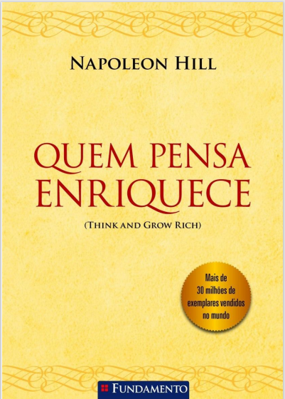

Quem Pensa Enriquece
Descrição do livro
EM TODOS OS CAPÍTULOS deste livro menciono o segredo de ganhar dinheiro, que trouxe fortunas a centenas de homens muito ricos – homens que analisei com cuidado durante longos anos. O segredo foi trazido à minha atenção por Andrew Carnegie, há mais de meio século. O sagaz e adorável velho escocês o jogou para mim descuidadamente, quando eu não passava de um garoto. Depois, recostou-se na cadeira com um alegre piscar de olhos e ficou a examinar-me atentamente, para ver se eu possuía cabeça suficiente para entender o pleno significado do que me dissera. Quando percebeu que eu captara a idéia, indagou se eu queria passar vinte anos ou mais preparando-me para apresentá-la ao mundo, aos homens e mulheres que, sem o segredo, passariam a vida inteira fracassados. Disse-lhe que o faria e, com a cooperação dele, mantive a promessa. Este livro contém o segredo, segredo testado na prática por milhares de pessoas, em quase todos os setores da vida. A idéia de Mr. Carnegie era de que a formula mágica, que lhe dera estupenda fortuna, deveria ser colocada ao alcance das pessoas que não dispõem de tempo necessário para averiguar como se ganha dinheiro. Esperava que eu pudesse testar e demonstrar a integridade da fórmula, através da experiência de homens e mulheres, nas varias profissões. Acreditava que se deveria ensinar a fórmula nas escolas e faculdades públicas, expressando a opinião que, se fosse transmitida de maneira certa, revolucionaria a tal ponto todo o...
Baixar Livro